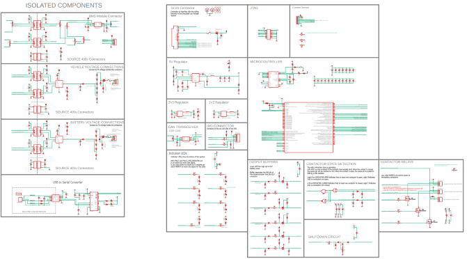
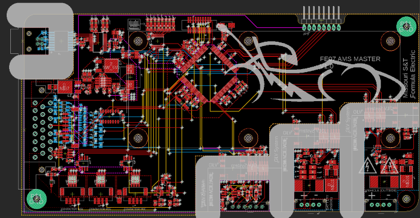
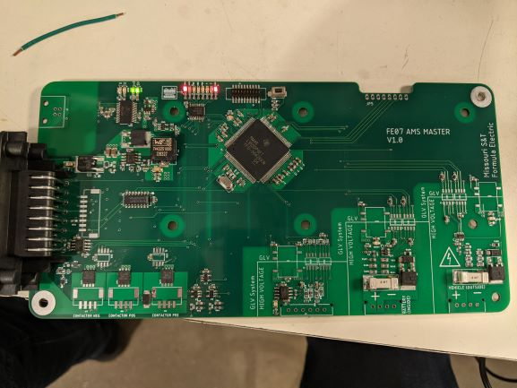

AMS
Accumulator Management System
Overview
The new battery needs a new accumulator system. This means that a new AMS was needed. The goal of this project was to create an AMS that is robust and also future proof so we can expand the capactiy of the battery pack without having to create a new board. The board is controlled by a TI Hercules microcontroller which handles all requirements of the project.
Constraints

The AMS is a very important board and is safety-critical. The board needs to communicate over CAN to the MasterBlaster, communicate over SPI for the HV ADCs, and communicate over UART for PC debugging and data logging. The board also needs to perform ADC readings on the current sensor, and monitor GIO pins for digital faults and statuses. The AMS also controls precharging the HV system and controlling the Accumulator's contactors in order to connect the battery to the rest of the tractive system. HV isolation is also requried so the board has to be designed with isolation in mind.
Design
{kind=link}
The board was designed in EAGLE. According to FSAE rules, external USB connection on the AMS as well as HV sections of the board must be isolated 100 mils from each other. This area is marked out in gray. Because of isolation between the HV system and the LV system, an ADC with serial communication was required to communicate over an opto isolator. The ADC chosen communicates over SPI so we can talk to both ADCs on the same bus. Buffers are used to give 12V TTL signals to the rest of the car and buffer 12V TTL input signals to 3v3 for the Hercules. 8 LEDs are used to show a quick status of the board, showing faults and contactor states. Contactors are controled through low-side gate drivers controlled by HET pins on the Hercules.
Results
I am currently working on this project. I have designed, routed, and fabricated this board. The board is now going through software testing and we are testing SPI first.